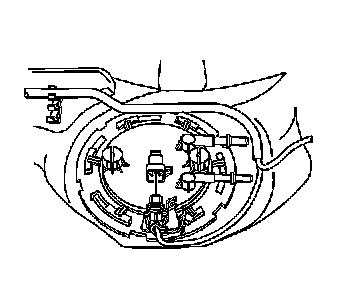
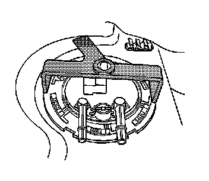
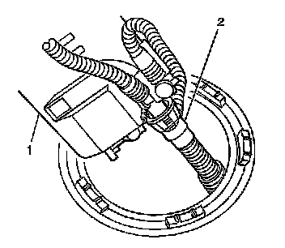
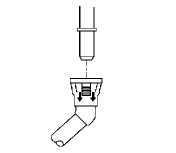
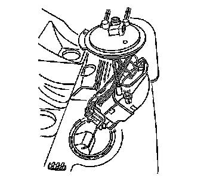
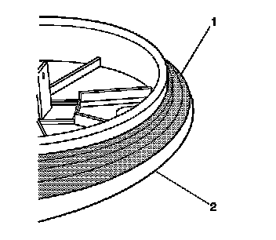

Primary Fuel Tank Module Replacement
Primary Fuel Tank Module Replacement
Tools Required
J 45747 Fuel Tank Sender Wrench
Removal Procedure
Caution: Refer to Gasoline/Gasoline Vapors Caution (Service Precautions) .
1. Remove the fuel tank hoses. Refer to Fuel Hoses/Pipes Replacement - Filter to Tank (Service and Repair) .

2. Disconnect the electrical connector from the primary fuel tank module.

Important: Do not allow the tool to come in contact with the fuel pipes while unlocking the cam lock ring.
3. Rotate the cam lock ring counterclockwise using the J 45747 .
4. Remove the cam lock ring from the fuel tank.

Important: The primary fuel tank module (1) is horizontal in the installed position, but pivots vertically for removal.
5. Carefully lift the primary fuel tank module (1) from the fuel tank only enough to access the transfer tube (2).

6. Complete the following in order to disconnect the transfer tube from the primary fuel tank module:
1. Pull the locking mechanism away from the module.
2. Remove the transfer tube from the module.

7. Remove the primary fuel tank module from the fuel tank.
8. Remove the primary fuel tank module seal from the module.
Do not reuse the seal.
Installation Procedure

Important: Ensure the seal bead is facing the fuel tank.
1. Place the new primary fuel tank module seal (1) over the module (2).
2. Complete the following in order to connect the transfer tube (2) to the primary fuel tank module (1).
1. Grasp the transfer tube (2) from inside the fuel tank.
2. Position the module (1) near the module opening.
3. Connect the transfer tube (2) to the module (1).
Important:
* The primary fuel tank module (1) is horizontal in the installed position, but pivots from the vertical position for installation.
* Ensure the fuel level float is free from binding while inserting the module (1).
3. Carefully insert the primary fuel tank module (1) into the fuel tank.
4. Press the primary fuel tank module (1) downward, aligning the module to the encapsulated ring.
5. Position the cam lock ring to the fuel tank.
Important: Do not allow the tool to come in contact with the fuel pipes while locking the cam lock ring.
6. Rotate the cam lock ring clockwise using the J 45747 until fully seated.
7. Connect the electrical connector to the primary fuel tank module.
8. Install the fuel tank hoses. Refer to Fuel Hoses/Pipes Replacement - Filter to Tank (Service and Repair) .